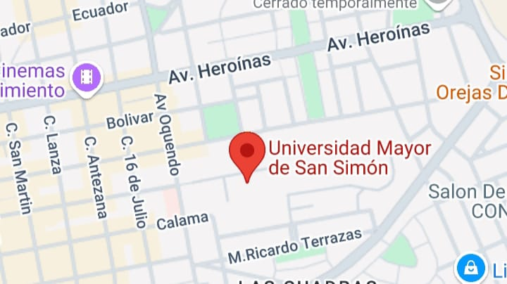

Universidades Principales
Universidad Mayor de San Andrés (UMSA)
Carreras:
Ingeniería Agronómica / Licenciatura / Duración: 5 años
Programa Medicinal Veterinaria Zootecnia / Licenciatura / Duración: 5 años
Arquitectura / Licenciatura / Duración: 5 años
Diseño Gráfico / Licenciatura / Duración: 5 años
Economía / Licenciatura / Duración: 5 años
Bioquímica / Licenciatura / Duración: 5 años
Derecho y Ciencias Jurídicas / Licenciatura / Duración: 5 años
Medicina / Licenciatura / Duración: 6 años
Ingeniería Civil / Licenciatura / Duración: 5 años
Psicología / Licenciatura / Duración: 4,5 años

Ubicación:
Redes Sociales:
Contacto:
Teléfono: (591 - 2) 2612298. Av. Villazón N° 1995, Plaza del Bicentenario - Zona Central.
Email: informate@umsa.bo
Página Web: INGRESAR
Universidad Tecnica de Oruro
Carreras:
Derecho / Licenciatura / Duración: 5 años
Psicología / Licenciatura / Duración: 5 años
Antropología / Licenciatura / Duración: 5 años
Ingeniería Civil / Licenciatura / Duración: 10 SEM.
Administración de Empresas / Licenciatura / Duración: 5 años
Ingeniería Agronómica / Licenciatura / Duración: 9 SEM.
Arquitectura / Licenciatura / Duración: 10 SEM.
Medicina / Licenciatura / Duración: 6 años
Enfermería / Licenciatura / Duración: 5 años
Ingeniería de Minas / Licenciatura / Duración: 10 SEM.
Ubicación:
Redes Sociales:
Contacto:
Av. 6 de Octubre #5715 entre Cochabamba y Ayacucho Telefonos: Rectorado: (591) (2) - 52 42215 Vice Rectorado: (591) (2) - 52 55543 Secretaria Gral.: (591) (2) - 52 80609 Relaciones Públicas: (591) (2) - 52 50100 Fax: (591) (2) – 52 42215 Casilla Postal: 49
Email: contacto@uto.edu.bo
Página Web: INGRESAR
Universidad Autonoma Tomas Frias
Carreras:
Medicina Veterinaria y Zootecnia – Tupiza
Enfermería
Ingeniería Agropecuaria – Villazon
Medicina
Ingeniería Electrónic
Economía – Uyuni
Ingeniería de Procesos de Materias Primas Mineras
Derecho
Lingüística e Idiomas
Administración de empresas
Ubicación:

Redes Sociales:
Contacto:
Serrudo s/n, esquina Av. Civica 26227300 - 72400280
Email: informaciones@uatf.edu.bo
Página Web: INGRESAR
Universidad Mayor Real y Pontificia de San Francisco Xavier
Carreras:
Derecho / Licenciatura / Duración: 5 años
Historia / Licenciatura / Duración: 5 años
Carrera de Medicina / Licenciatura / Duración: 5 años
Odontología / Licenciatura / Duración: 5 años
Química farmacéutica / Licenciatura / Duración: 5 años
Contaduría Pública / Licenciatura / Duración: 5 años
Economía / Licenciatura / Duración: 5 años
Administración de Empresas / Licenciatura / Duración: 5 años
Ingeniería Industrial / Licenciatura / Duración: 10 SEM.
Informática / Tec. Sup. / Duración: 6 SEM.
Ubicación:
Redes Sociales:
Contacto:
Calle Junín esq. Estudiantes Sucre, Bolivia Telf./Fax. (591)(4) 6441541 / Telf. 6453308 Telf. 6461787 (Relaciones Públicas)
Página Web: INGRESAR
Universidad Mayor de San Simon (UMSS)
Carreras:
Licenciatura en Criminología y Ciencias Forenses
Licenciatura en Medicina / Licenciatura / Duración: 5 años
Carrera de Ingeniería Agronómica / Licenciatura / Duración: 5 años
Área de medicina y salud animal.
Licenciatura en Odontología / Licenciatura / Duración: 5 años
Carrera de Bioquímica y Farmacéutica / Licenciatura / Duración: 5 años
Licenciatura en Economía / Licenciatura / Duración: 9 SEM.
Arquitectura / Licenciatura / Duración: 5 años
Diseño gráfico / Técnico Superior / Duración: 3 años
Psicología / Licenciatura / Duración: 5 años
Ubicación:
Redes Sociales:
Contacto:
Telf: (+591) 4 4525161 Fax: (+591) 4 4524772 Telf: (+591) 4 4251515; (+591) 4 4525161 Fax: (+591) 4 4525161
Email: s.gral@umss.edu.bo
Página Web: INGRESAR
Universidad Autonoma Gabriel Rene Moreno
Carreras:
Carrera de Metalurgia / Licenciatura / Duración: 4,5 años
Ingeniería en Agrimensura / Licenciatura / Duración: 5 años
Biología / Licenciatura / Duración: 9 SEM.
Ingeniería Comercial / Licenciatura / Duración: 5 años
Economía / Licenciatura / Duración: 4,5 años
Ingeniería Civil / Licenciatura / Duración: 5 años
Ingeniería Ambiental / Licenciatura / Duración: 5 años
Ingeniería en Sistemas / Licenciatura / Duración: 5 años
Medicina Veterinaria y Zootécnica / Licenciatura / Duración: 5 años
Trabajo Social / Licenciatura / Duración: 5 años
Ubicación:
Redes Sociales:
Contacto:
Tel.: (591) (3) 3365533, (591) (3) 3365544 Fax: (591) (3) 3342160 NIT: 1028037020 Santa Cruz, Bolivia
Email: juliavasquez@uagrm.edu.bo
Página Web: INGRESAR
Universidad Amazonica de Pando
Carreras:
Contaduría Pública
Turismo Sostenible
Ingeniería Industrial
Ingeniería Agroforestal
Ingeniería Comercial
Administración de Empresas
Ingeniería Financiera
Comunicación Social
Ciencias Políticas
Ingeniería de Sistemas
Ubicación:
Redes Sociales:
Contacto:
Av. Las Palmas Campus Universitario
Página Web: INGRESAR
Universidad Autonoma del Beni Jose Ballivian
Carreras:
Medicina Veterinaria y Zootecnia / Licenciatura / Duración: 10 SEM.
Zootecnia / Licenciatura / Duración: 8 SEM.
Bioquímica y Farmacia / Licenciatura / Duración: 10 SEM
Medicina / Licenciatura / Duración: 5 Años
Enfermería / Licenciatura / Duración: 5 Años
Contaduría Pública / Licenciatura / Duración: 4,5 Años
Artes Musicales / Tec. Medio / Duración: 4 SEM.
Artes Plásticas / Tec. Medio / Duración: 4 SEM
Ingeniería Civil / Licenciatura / Duración: 10 SEM.
Derecho / Licenciatura / Duración: 8 SEM.
Ubicación:
Redes Sociales:
Contacto:
Avenida 6 de agosto Edificio Antonio Vaca Díez, Nº 61. Trinidad, Beni. Abierto de lunes a viernes De 8:00 am a 3:00 pm Comunícate con Soporte Técnico 69656124 - disponible horarios de oficina.
Email: soporte@uabjb.edu.bo
Página Web: INGRESAR
Universidad Autonoma Juan Misael Saracho
Carreras:
Ingeniería Civil / Licenciatura / Duración: 5 años
Ingeniería de Alimentos / Licenciatura / Duración: 5 año
Contabilidad General / Tec. Sup. / Duración: 7 SEM.
Estadística Económica / Tec. Sup. / Duración: 3 años
Enfermería Obstetriz / Licenciatura / Duración: 5 años
Medicina / Médico Cirujano / Duración: 10 SEM.
Idiomas / Licenciatura / Duración: 5 años
Psicología / Licenciatura / Duración: 5 años
Derecho / Licenciatura / Duración: 5 años
Ingeniería Agronómica / Licenciatura / Duración: 10 SEM.
Ubicación:
Redes Sociales:
Contacto:
Av. Jaime Paz Zamora, Tarija Teléfono: 4 6645097
Email: rector@uajms.edu.bo
Página Web: INGRESAR
Normales de Bolivia
La Lista de normales ESFM/UA de Bolivia, esta abarca los departamentos de La Paz, Cochabamba, Santa Cruz, Oruro, Potosí, Chuquisaca, Tarija, Beni y Pando. En todo el territorio boliviano se encuentran 47 Escuelas Superiores de Formación de Maestros (ESFM) y Unidades Académicas (UA) que desempeñan un papel importante en la construcción del futuro educativo de nuestro pais, Estas instituciones se dedican a la formación de futuros maestros.
En el siguiente enlace puedes ver todas las Normales de toda Bolivia.
LISTA DE NORMALES